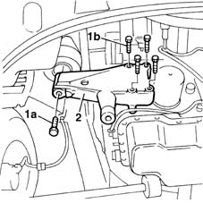
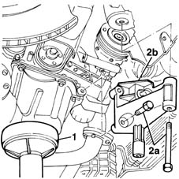

1008A46 cam shaft left rigid mount - r r
- Path
- Procedures > 10 ENGINE UNIT > 1008 POWER UNIT SUPPORTS > 1008A power unit fastenings > 1008A46 cam shaft left rigid mount - r r
- Kind
- repair procedure (removal / refitting; the operation number is the code)
- Applies to
- all engines; all production periods
- Interactive page
- https://sloeber94.github.io/elrnDB-fMltpl/en/#/2891185
Applies to: engines: 1.6 16v; all production periods
 Removing
Removing
 Refitting
RefittingPlace the car on a ramp.
Position a column jack beneath the engine to support it safely.
1. Unscrew retaining bolt (1a) and withdraw. Unscrew retaining bolts (1b).
2. Remove the rigid mount from the engine.

Applies to: engines: 1.6 16v; all production periods
Refitting
RemovingPosition the rigid mount and tighten the bolts retaining it to the engine to torque.
 | Fastening | Component | Ø | Value (daNm) |
|---|---|---|---|---|
- | Bolt | ENGINE MOUNT TIMING SIDE | M10 | 7 |
Insert the bolt into the mount hole and tighten to torque.
| Fastening | Component | Ø | Value (daNm) |
|---|---|---|---|---|
- | Bolt | ENGINE MOUNT TIMING SIDE | M12 x 1.25 | 8 |
Remove the column jack.
Remove the vehicle from the ramp.
Applies to: engines: 1.9 JTD 8V; all production periods
Removing
Refitting4450B10 Front WHEEL (one) - R.R.
- 7055B64 Engine compartment DUST shield in front wheel arch (one), left or right - R.R.
1092G10 single engine belt r r
1092A12 crankshaft pulley - r+r for versions with air conditioner
1. Position a hydraulic jack under the motor.
2. Unscrew retaining bolts (2a) and remove rigid engine mount (2b).

Applies to: engines: 1.9 JTD 8V; all production periods
Refitting
RemovingFit the timing side rigid engine mount and secure it by tightening the bolts to the recommended torque.
| Fastening | Component | Ø | Value (daNm) |
|---|---|---|---|---|
- | Bolt | FRONT RUBBER MOUNTS | M12 x 1.25 | 8 |
| Fastening | Component | Ø | Value (daNm) |
|---|---|---|---|---|
- | Bolt | ENGINE MOUNT TIMING SIDE | M10 | 4.2 - 5.2 |
Remove the hydraulic jack.
1092A12 crankshaft pulley - r+r for versions with air conditioner
1092G10 single engine belt r r
- 7055B64 Engine compartment DUST shield in front wheel arch (one), left or right - R.R.